Inhaltsübersicht
1. Allgemein
Dieses Handbuch bezieht sich momentan nur auf die Desktop Version. Die Webseite wird hinzugefügt werden, wenn ich sie entwickelt habe.
Die Desktop Version (auch Applikation genannt) ist in fünf Tabs gegliedert, die in der Leiste oben links ersichtlich sind. Das wechseln zwischen Tabs funktioniert einfach durch anklicken des gewünschten Ziel-Tabs.
Die Eingaben werden zwar im UTF-8 Format gespeichert, es sollten dennoch keine Unicode Zeichen, wie Emojis, eingefügt werden, da dies die Applikation zum Absturz bringt (Python kann Unicode Zeichen nicht richtig darstellen). Sonderzeichen ihrer Anzeigesprache (wie die deutschen Umlaute) scheinen dennoch zu funktionieren.
Sollten Fehler auftreten, befinden sich weiter Informationen dazu in der log.txt Datei, die von der Applikation automatisch angelegt wird. Diese ist vor allem für den Entwickler zur Fehlerbehebung sehr hilfreich. Bitte beachten Sie, das die Datei beim erneuten Start der Applikation überschrieben wird. Sollten Sie also einem Fehler begegnen, kopieren Sie sich bitte die log.txt Datei, wenn Sie den Fehler auch auf Github melden wollen. Ich würde mich sehr darüber freuen und natürlich versuchen ihn zu beheben.
Die folgenden Tabs sind momentan enthalten:
Änderungen zur Vorgängerversion
Die folgenden Dinge wurde geändert:
- Autoren haben jetzt nur mehr ein Vorname und ein Nachname Feld, alle anderen wurden entfernt.
- Bücher haben jetzt ein Sprache Feld
Die folgenden Dinge wurden hinzugefügt:
- Ein automatisch ausgeführtes Datenbank Format Konversions Tool
- Die Möglichkeit, Suchergebnisse als CSV Datei zu exportieren
2. Installation
Abhängigkeiten:
- Der Quellcode der Applikation
- Python (getestet mit Version 3.13.1)
- Eine Python virtual environment, kurz venv
- Die Python Packete aus der requirements-Desktop.txt Datei
Installationsschritte:
Laden Sie Python herunter, wenn Sie es nicht bereits installiert haben. Getestet wurde das Programm mit Version 3.13.1.
Linux Benutzer sollten Python über den Packetmanager iher Distribution installieren.
Für Windows Benutzer befindet sich der Download auf der offiziellen Seite der Python Software Foundation.
WICHTIG für Windows Benutzer: aktivieren Sie bei der Installation die Option Python zum PATH hinzufügen (add python to PATH)!
Entscheiden Sie sich für einen Installationsordner für die Applikation. Soll die Datenbank von mehrern Benutzer verwendet werden, empfiehlt es sich, als Installationsordner einen geteilten Netzwerk- oder Cloudordner zu verweden. Beispielsweise ein Netzlaufwerk oder ein Gruppenordner in Nextcloud (meine Wahl).
Dann sollten Sie eine Ordner namens src im Installationsordner erstellen. Dieser wird als Speicherort für den Quellcode dienen.
Laden Sie nun den Quellcode herunter. Dafür haben Sie folgenden Möglichkeiten:
- Sie können das "Sourcecode.zip" Archiv des zu installierenden Releases herunterladen und in den
srcOrdner entzippen. ODER - Sie können (wenn Sie mit Softwareentwicklungstools vertraut sind) mithilfe von Git das Repository des Projektes (hier) in den
srcOrdner klonen und den Commit des zu installierenden Releases auschecken.
Als nächstes öffnen Sie den src Ordner im Terminal (Windows: CMD oder Terminal auf Windows 11) und erstellen eine virtuelle Umgebung für Python:
Das funktioniert folgendermassen: python -m venv NAME, wobei Sie NAME mit dem gewünschten Namen der virtuellen Umgebung ersetzen. Standard ist (zumindest für mich) venv oder env.
Nun müssen Sie die Packete aus der requirements-Desktop.txt Datei installiert werden. Am einfachsten geht das mit dem Befehl NAME\Scripts\pip.exe install -r requirements-Desktop.txt auf Windows und NAME/bin/pip install -r requirements-Desktop.txt auf Linux. Achten Sie wieder darauf, NAME mit dem von Ihnen gewählten Namen zu ersetzen
Windows benutzer können ihr Terminal/ ihre CMD jetzt schliessen.
Startmöglichkeit hinzufügen
Als nächstes sollten wir Ihnen eine Möglichkeit geben, die Applikation einfacher zu starten. Auf Windows wäre das etwas eine Verknüpfung, auf Linux ein Script für ihre Shell.
Windows
Öffnen Sie zunächst den Installationsordner im Explorer und machen einen Rechtsklick auf eine leere Fläche. Wählen Sie nun Neu -> Verknüpfung aus. Geben Sie nun den Pfad des Installationsordners ein (Sie können ihn aus der Addressleiste oben im Explorer kopieren) ein und fügen Sie folgendes hinzu: src\NAME\Scripts\pythonw.exe. Klicken Sie auf weiter und wahelen Sie einen Namen wie Lerchbacher Bücherdatenbank.
Machen Sie nun einen Rechtsklick auf die neue Verknüpfung und wählen Sie "Eigenschaften". Nun müssen wir zwei Kleinigkeiten ändern:
Als erstes wenden wir uns dem Ziel zu: fügen Sie am Ende der Zeile, ausserhalb der Anführungszeichen, folgendes hinzu: src\Desktop\main.py.
Danach ändern wir etwas in Ausfüheren in: ersetzen Sie src\NAME\Scripts\ durch src\Desktop.
Jetzt sollten Sie in der Lage sein, die Applikation über die Verknüpfung zu starten.
Linux
Unter Linux ist meine Empfehlung, ein einfaches Skript für Ihre Shell zu schreiben, dass die Applikation startet. Dieses sollte sich direkt im Installationsordner befinden. Ich kenne mich nicht gut mit den verschiedenen Shells aus, deshalb könnte es sein, dass mein Beispiel bei Ihnen nicht funktioniert. In dem Fall, fragen Sie bitte eine Person, die sich mit der Shell auskennt, ob sie ihnen helfen kann. Ersetzen Sie ausserdem SHELL durch ihre Shell und NAME durch den Namen der venv.
#!/bin/SHELL
src/NAME/bin/python src/Desktop/main.py
Zum Schluss müssen Sie das Skript noch ausfürbar machen. Das funktioniert mit dem Befehl chmod +x SKRIPT, wobei SKRIPT der Name des Skripts ist.
3. Übersicht
Der Übersicht Tab zeigt die Anzahl der Bücher und Autoren in der Datenbank sowie die 12 zuletzt hinzugefügten Bücher und Autoren an. Ebenfalls finden Sie hier eine Anzeige der aktuell installierten Version, sowie den Link zum zur Version passenden Handbuch.
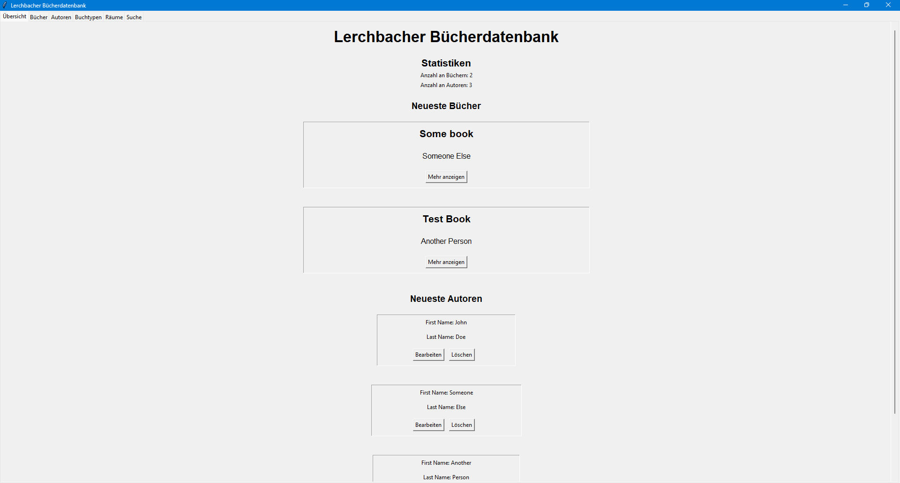
Bücher und Autoren lassen sich über den "Mehr anzeigen" Knopf ausklappen. Dadurch werden mehr Informationen und Optionen angezeigt, wie etwas "Bearbeiten" und "Löschen".
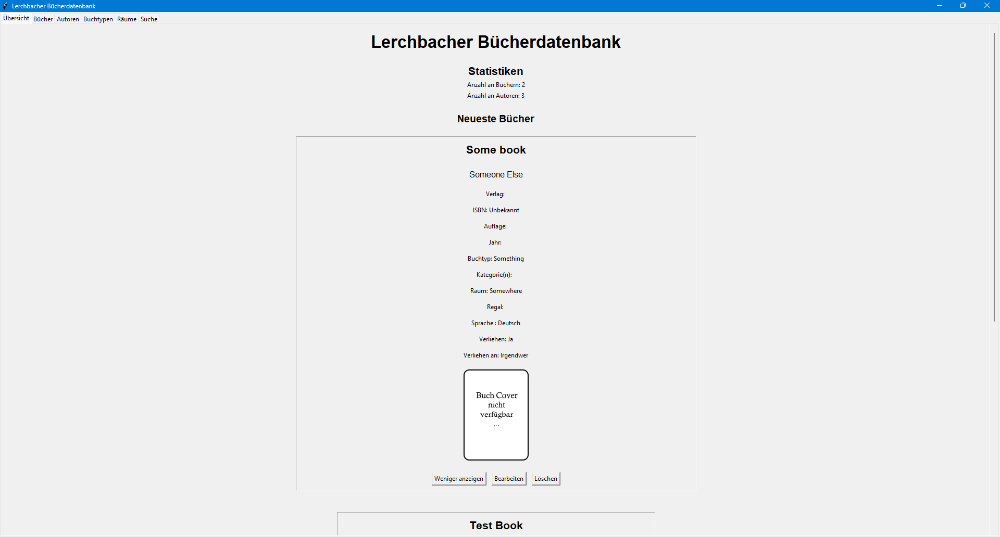
4. Bücher
Der Bücher Tab enthält eine Liste alle Bücher, die in der Datenbank gespeichert sind. Ebenfalls findet sich dort die Möglichkeit, neue Bücher hinzuzufügen. Auch hier lassen sich Bücher über den "Mehr anzeigen" Knopf ausklappen. Dadurch werden mehr Informationen und Optionen angezeigt, wie etwas "Bearbeiten" und "Löschen".
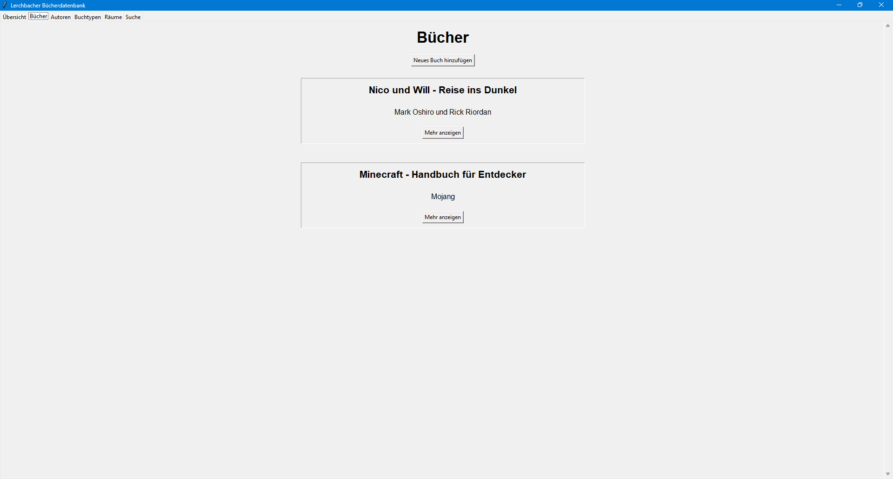
Bearbeitungs-Dialog
Ein Klick auf den Knopf "Neues Buch hinzufügen" öffnent einen leeren Buch-Bearbeitungs Dialog.
Der selbige wird auch geöffnet, sollten Sie bei einem Buch "Bearbeiten" wählen.
In diesem finden sich eine Vielzahl an Eingabefeldern. Die Felder, die mit einem * markiert sind, müssen immer ausgefüllt werden, die übrigen sind optional. Alle sind beschriftet, aber wir gehen Sie hier trotzdem einmal durch.
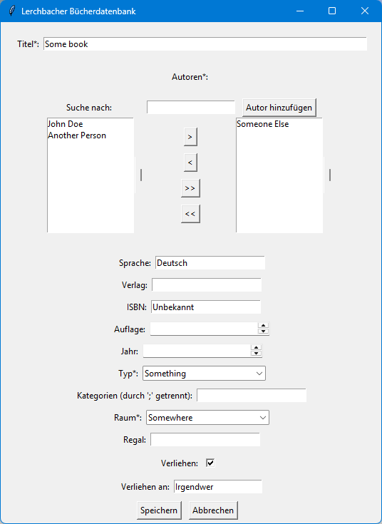
Titel
Dieses Feld speichert den Titel eines Buches.
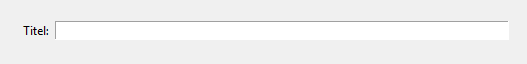
Autoren
Dieses Feld erlaub ihnen, eine beliebige Anzahl an Autoren zum Buch hinzuzufügen. Bitte beachten Sie, dass mindestens 1 Autor angegeben werden muss! Sollten Sie also ein Buch von einem unbekannten Autor eintragen wollen, empfiehlt es sich, einen "Unbekannt" Autor hinzuzufügen. (Siehe 5. Autoren)
Neben der Möglichkeit, nach Autoren zu suchen, finden Sie hier ebenfalls einen Knopf, um einen neuen Autor zu erstellen.
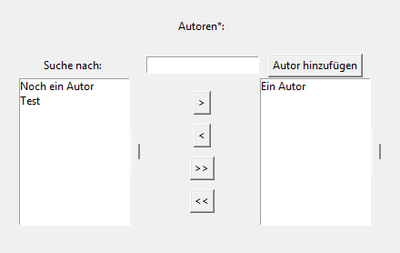
Sehen wir es uns nun etwas genauer an:
- Das zentrierte kleine Textfeld dient dem Filtern der Autoren. Gefilter werden allerdings nur die noch nicht hinzugefügten Autoren.
- Auf der linken Seite befindet sich eine Auflistung aller Autoren, die den Inhalt des Suchfeldes in ihrem Namen haben.
Sie können durch einen einfachen Klick an- oder abgewählt werden. Gewählte Autoren werden blau markiert und unterstrichen. -
In der Mitte befinden sich vier Knöpfe:
- Der
>Knopf verschiebt alle markierten Autoren von der linken auf die rechte Seite. - Der
<Knopf verschiebt alle markierten Autoren von der rechten auf die linke Seite. - Der
>>Knopf verschiebt alle Autoren von der linken auf die rechte Seite, egal ob gewählt oder nicht. - Der
<<Knopf verschiebt alle Autoren von der rechten auf die linke Seite, egal ob gewählt oder nicht.
- Der
- Auf der rechten Seite befindet sich eine Auflistung aller Autoren, die dem aktuellen Buch zugeordnet wurden.
Sie können durch einen einfachen Klick an- oder abgewählt werden. Gewählte Autoren werden blau markiert und unterstrichen. - Über der rechten Seite finden Sie den Knopf, über den Sie einen neuen Autor erstellen können. Nach dem erstellen wird die Liste der Autoren automatisch aktualisiert.
Sprache
Speichert die Sprache des Buches (wenn es leer gelassen wird, wird 'Unbekannt' eingefügt.
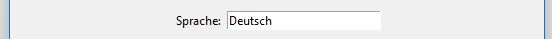
Verlag
Hier könne Sie den Verlag / Herausgeber des Buches eintragen
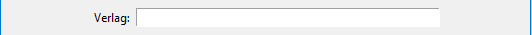
ISBN
Dieses Feld bietet die Möglichkeit, die ISBN-13 des Buches einzugeben. Die Beistriche zwischen den verschiedenen Segmenten werden automatisch gesetzt. Die Länge dieses Feldes wurde, Aufgrund des einzugebenden Wertes, auf 13 Zeichen, ausgenommen der Beistriche, begrenzt. Schreiben Sie bitte nicht zu schnell, da die Formatierung etwas langsam ist. Zur Referenz, die ISBN-13 hat die Form xxx-x-xxx-xxxxx-x. Sollten Sie nur eine kürzere ISBN finden, die mit 3 beginnt, können Sie einfach 978 davorstellen um Sie zu auf das neue Format zu übertrage (es handelt sich dabei um ältere Versionen des ISBN-Formats).
Auflage
Hier könne Sie die Auflage des Buches eintragen. Der akzeptierte Wertebereich liegt zwischen 1 und 20.
Typ
Dieses Feld speichert den Buchtypen des Buches. Dieser kann aus der Liste gewählt werden, die beim Klicken auf den kleinen Pfeil rechts angezeigt wird. Bitte prüfen Sie vor Erstellen des Buches, ob der gewünschte Buchtyp bereits existiert (6. Buchtypen) Das Feld verfügt ausserdem über eine Autovervollständigung für die möglichen Buchtypen. Sie können also den Anfang eines Typen eingeben und bekommen einen Vorschlag zur Vervollständigung.
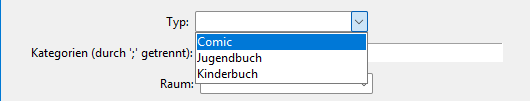
Kategorien
Hier könne Sie Kategorien oder Stichwörter zum Buch eintragen. Die einzelnen Einträge können Leerzeichen enthalten und werden durch Semikolone(';') getrennt.
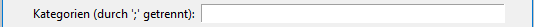
Raum
Dieses Feld speichert den Raum des Buches. Dieser kann aus der Liste gewählt werden, die beim Klicken auf den kleinen Pfeil rechts angezeigt wird. Bitte prüfen Sie vor Erstellen des Buches, ob der gewünschte Raum bereits existiert (7. Räume) Das Feld verfügt ausserdem über eine Autovervollständigung für die möglichen Räume. Sie können also den Anfang eines Raumes eingeben und bekommen einen Vorschlag zur Vervollständigung.
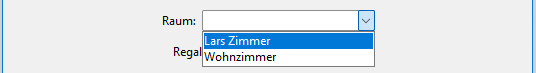
Regal
Hier können Sie das Regal eintragen, in dem das Buch normalerweise steht.
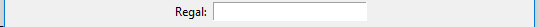
Verliehen
Speichert, ob das Buch im Moment verliehen ist oder nicht. Den Zustand des Felder ändern Sie durch anklicken.
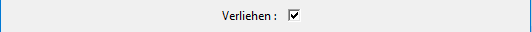
Verliehen an
Dieses Feld wird nur angezeigt, wenn im vorherigen Feld angegeben wurde, dass das Buch momentan verliehen ist. Hier kann eingetragen werden, an welche Person das Buch vergeben wurde.
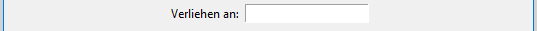
Knöpfe
Am unteren Ende der Bearbeitungs- und Erstellungsdialoge befinden sich der "Speichern" und der "Abbrechen" Knopf.
Der Speichern Knopf speichert die Daten der Felder in der Datenbank ab und schliesst den Dialog. Wurde der Dialog über den "Neues Buch hinzufügen" Knopf geöffnet, wird ein neues Buch erstellt. Das drücken von "Enter", während dieser Dialog geöffnet ist, speichert ebenfalls.
Der Abbrechen Knopf schliesst den Dialog, ohne die gemachten änderungen/Eintragungen in der Datenbank zu speichern.
Diese beiden Knöpfe werden in der ganzen Applikation mehrmals verwendet.
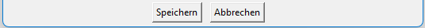
5. Autoren
Der Autoren Tab enthält eine Liste alle Autoren, die in der Datenbank gespeichert sind. Ebenfalls findet sich dort die Möglichkeit, neue Autoren hinzuzufügen. Auch hier lassen sich Autoren über den "Mehr anzeigen" Knopf ausklappen. Dadurch werden mehr Informationen und Optionen angezeigt, wie etwas "Bearbeiten" und "Löschen".
WARNUNG: Wenn Sie das Programm von einer vorherigen Version ( <= 1.1.2 ) aktualisiert haben, wird Ihre Datenbank automatisch in das Format der neuen Version ( >= 1.2.0 ) konvertiert. Dabei werden Daten über die Autoren verloren gehen, da das neue Format die Felder für Autoren stark reduziert hat. Ebenfalls zu beachten ist, dass für das Aufteilen das Namens (in älteren Versionen gab es nur ein Name Feld) nur den letzen, durch Leerzeichen abgetrennten Teil des Namens als Nachnamen verwendet. Sollte das für Autoren in Ihrer Datenbank nicht passen, müssen Sie es leider manuell korigieren.
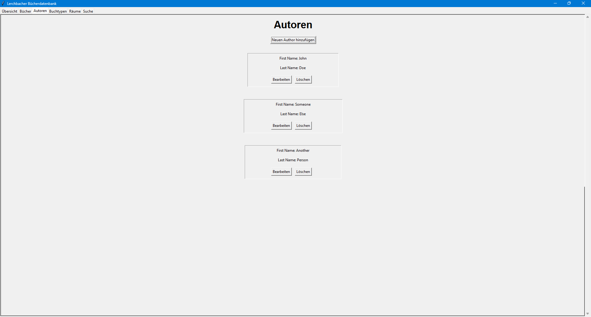
Bearbeitungs-Dialog
Ein Klick auf den Knopf "Neuen Autor hinzufügen" öffnet einen leeren Autoren-Bearbeitungs-Dialog.
Der selbige wird auch geöffnet, sollten Sie bei einem Autor "Bearbeiten" wählen.
In diesem finden sich zwei Eingabefelder, die eigentlich selbsterklärend sind.
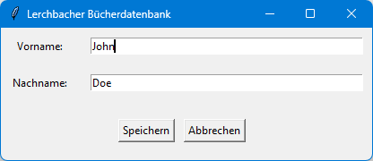
Vorname
Hier könnnen Sie den Vornamen des Autors eintragen
Nachname
Hier können Sie den Nachnamen des Autors eintragen
Knöpfe
Am unteren Ende der Bearbeitungs- und Erstellungsdialoge befinden sich der "Speichern" und der "Abbrechen" Knopf.
Der Speichern Knopf speichert die Daten der Felder in der Datenbank ab und schliesst den Dialog. Wurde der Dialog über den "Neuen Autor hinzufügen" Knopf geöffnet, wird ein neuer Autor erstellt. Das drücken von "Enter", während dieser Dialog geöffnet ist, speichert ebenfalls.
Der Abbrechen Knopf schliesst den Dialog, ohne die gemachten änderungen/Eintragungen in der Datenbank zu speichern.
Diese beiden Knöpfe werden in der ganzen Applikation mehrmals verwendet.
6. Buchtypen
In diesem Tab finden Sie eine Auflistung aller in der Datenbank gespeicherten Buchtypen. über den "Neen Buchtypen hinzufügen" Knopf könne Sie einen neuen Buchtypen anlegen. über den "Bearbeiten" Knopf neben jedem Buchtypen lässt sich der Name des Typen ändern und über den "Löschen" Knopf aus der Datenbank entfernen. Das drücken von "Enter", während dieser Dialog geöffnet ist, speichert ebenfalls.
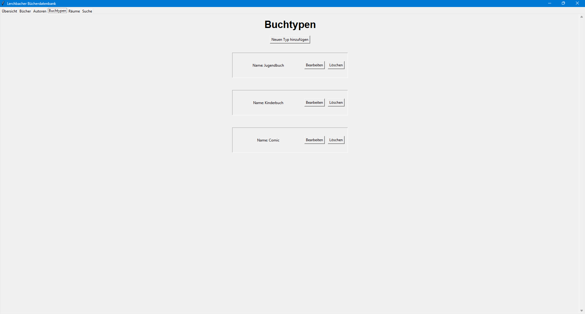
Bearbeitungs-Dialog
Hier können Sie den Namen des Buchtypen ändern, bzw. einen neuen mit dem angegebenen Namen erstellen.

7. Räume
In diesem Tab finden Sie eine Auflistung aller in der Datenbank gespeicherten Räume. über den "Neuen Raum hinzufügen" Knopf könne Sie einen neuen Raum anlegen. über den "Bearbeiten" Knopf neben jedem Raum lässt sich der Name des Raumes ändern und über den "Löschen" Knopf aus der Datenbank entfernen. Das drücken von "Enter", während dieser Dialog geöffnet ist, speichert ebenfalls.
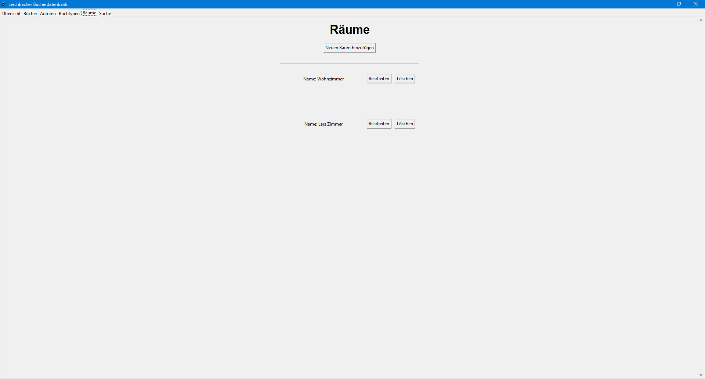
Bearbeitungs-Dialog
Hier können Sie den Namen des Raumes ändern, bzw. einen neuen mit dem angegebenen Namen erstellen.
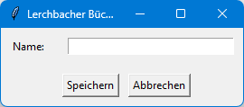
8. Suche
Der Suchen Tab stellt ihnen die Möglichkeit, die Datenbank zu dursuchen, zur verfügung.
Sie können wählen, ob sie eine generelle Suche nach einem Stichwort, oder eine Suche nach einem bestimmten Art von Eintrag in der Datenbank (Buch, Autor, Buchtyp oder Raum) durchführen möchten.
Ebenfalls finden Sie hier die möglichkeit, die Suchergebnisse der Suche (außer der generellen Stichwortsuche) in Form einer CSV Datei exportiert werden. Wenn der Button hierfür deaktiviert ist, prüfen Sie bitte, ob Sie bereits eine Suche durchgeführt haben oder die Suchoption "Alles" gewählt haben.
Wenn Sie ihre Auswahl ändern, wird Ihnen eine andere Sammlung an Suchfeldern angezeigt. Diese Unterscheiden sich nur minimal von den Bearbeitungs-Dialogen der einzelnen Eintragstypen.
Die Unterschiede werden im Folgenden erläutert:
Alles
Mit dieser Option könne Sie eine Suche nach einem bestimmten Stichwort in den Daten aller Einträge in der Datenbank durchführen. Die Ergebnisse werden nach Typ gegliedert angezeigt.
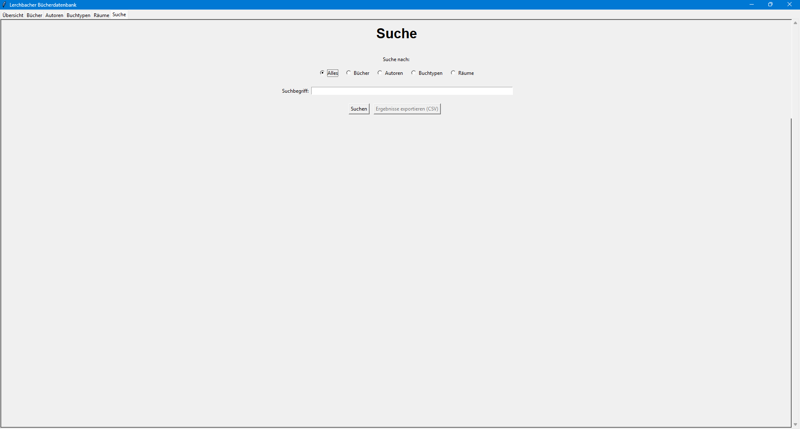
Bücher
Diese Option lässt Sie nach Büchern suchen. Die Suchfelder, die hier angezeigt werden, sind eine Kopie des Bearbeitungs-Dialoges für Bücher, abgesehen vom "Verliehen" Feld.
Dieses wurde durch ein Textfeld mit Autovervollständigung ersetzt (Ja, Nein).
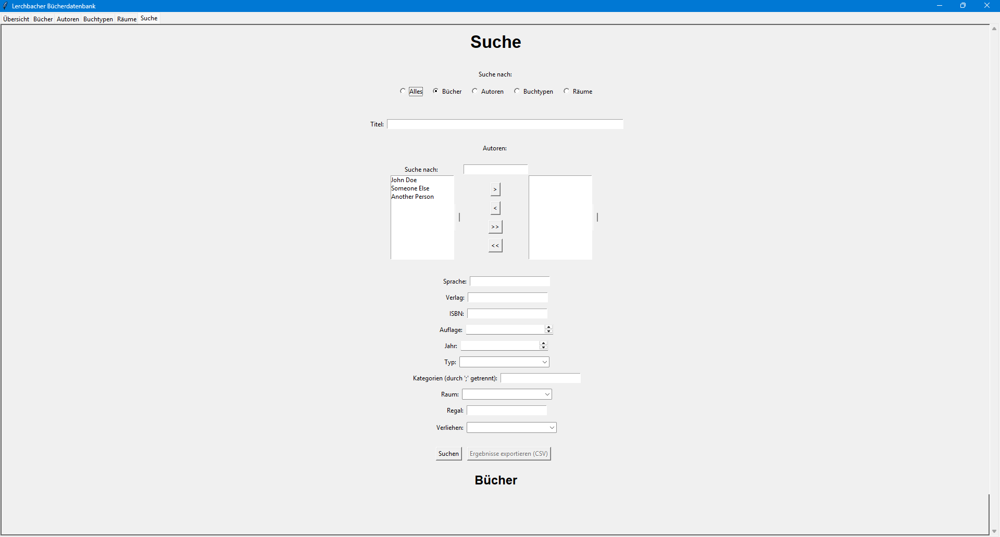
Autoren
Diese Option lässt Sie nach Autoren suchen. Die Suchfelder, die hier angezeigt werden, sind eine Kopie des Bearbeitungs-Dialoges für Autoren.
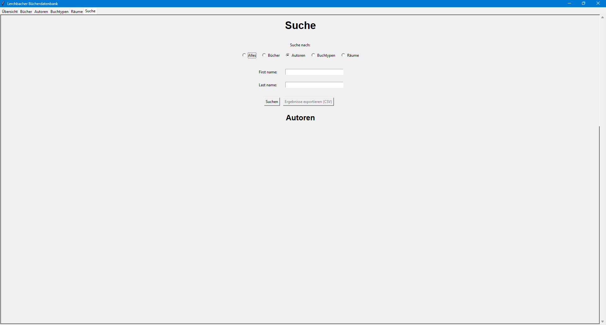
Buchtypen
Hier können Sie nach Buchtypen suchen, die den Inhalt des Eingabefelds in ihrem Titel haben.
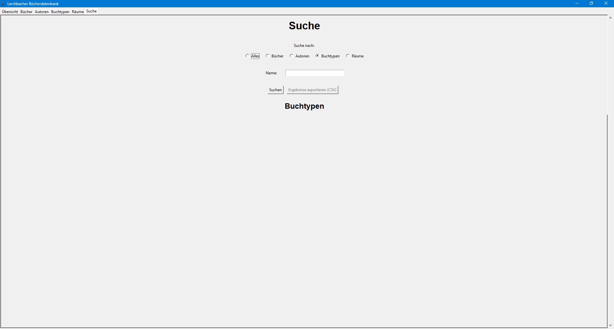
Räume
Hier können Sie nach Räumen suchen, die den Inhalt des Eingabefelds in ihrem Titel haben.
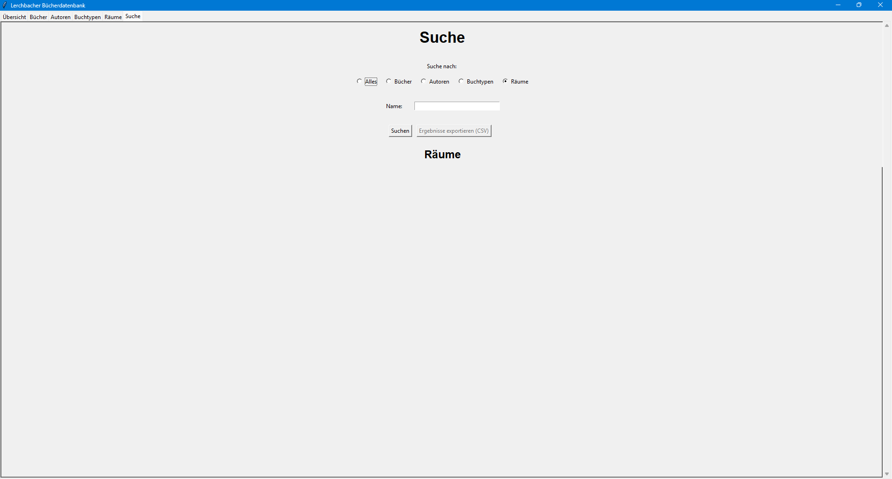